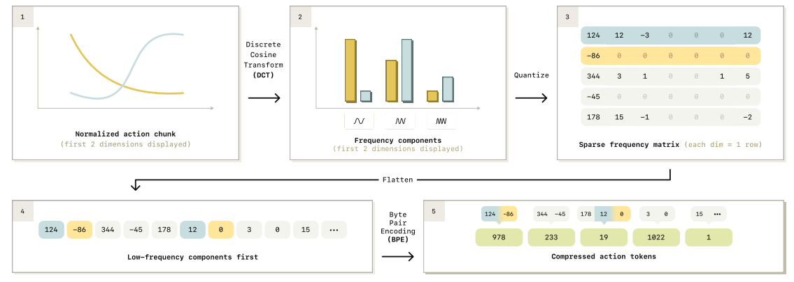
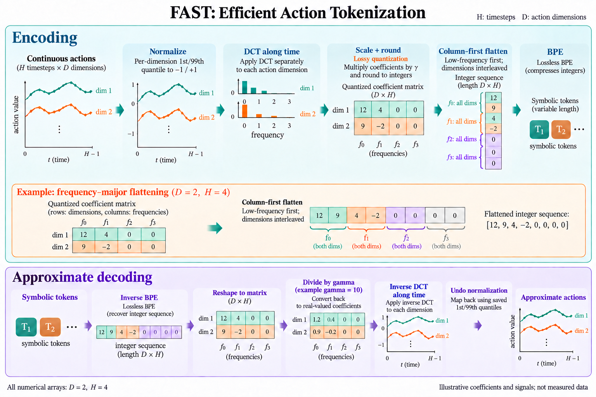
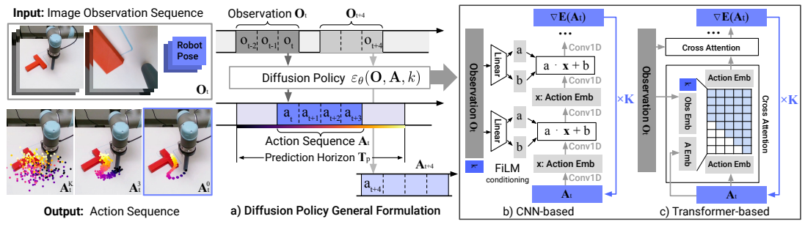
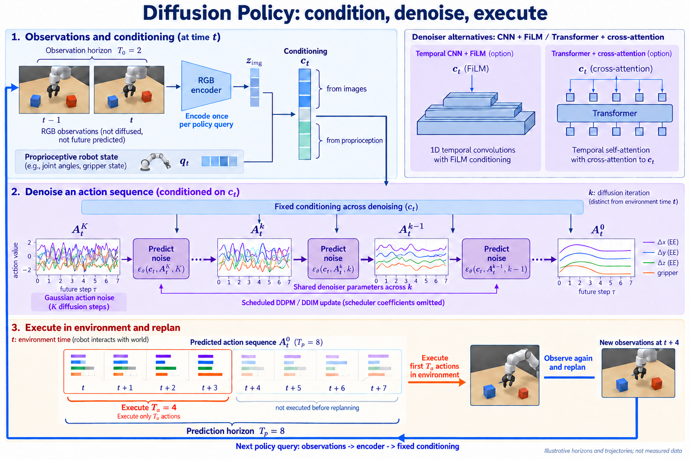
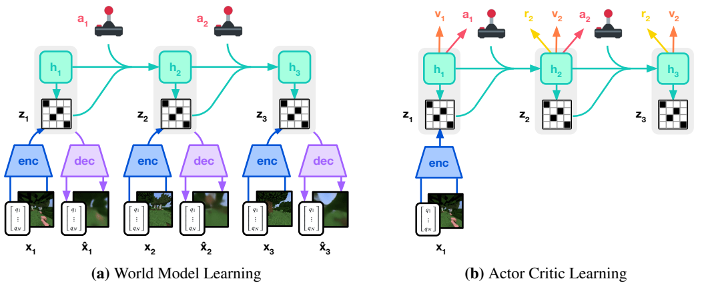
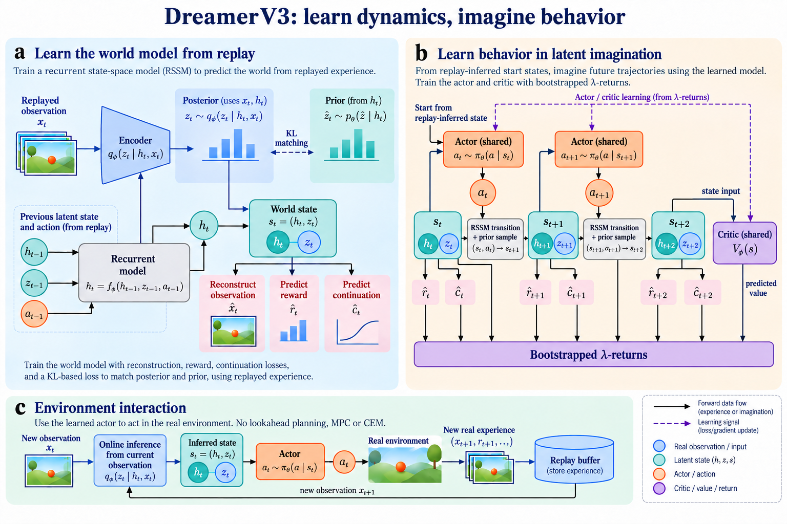

Zotero 新论文：原图与文字生图比较
2026-10-03 · FAST / Diffusion Policy / DreamerV3。每例 1 次生图 + 2 次编辑，全部使用内置 imagegen。目标论文图像未作为生图输入，全部修订后才查看原图。本轮仅测试 PNG，没有新增 SVG。生成与评估是同一 Codex，非独立盲评。
原图与生成图同宽呈现，长宽比和覆盖范围不同，不作像素相似度评分。点击图片可打开原尺寸。两例仍未通过科学检查；最后一稿是测试结果，不是投稿成品。
FAST 科学验收未通过
主机制和教学 inset 正确；上方展开列仍缺一个零。


残留问题 / 范围
- 上方数值列只显示3个零而不是4个，不能通过精确数组一致性
- 示意波形未根据给定系数计算，不可用于数值 DCT 验证
大图可读，但长说明占用很大空间；精确数字仍不稳定。
Diffusion Policy 核心范围已复核
限定核心机制通过；不是原论文完整网络结构图的替代。


残留问题 / 范围
- 机器人到新观测的短线无明显箭头头部
- 共享denoiser下方紫色路线不够简洁
- 缺少causal mask和逐层FiLM等内部机制，无法替代完整Figure 2
闭环与horizon比初稿清楚，画面较拥挤，不能据大图预览验收栏宽。
DreamerV3 科学验收未通过
actor动作方向和state标签改善，prior和在线反馈仍未完整通过。


残留问题 / 范围
- prior p(z|h)公式正确但缺少h输入路径
- 在线new observation路线实际仍从replay buffer出发
- critic只有terminal state输入清楚，未给出各时刻value
- 起始replay-inferred state没有清楚连接第一想象state
三区层次清晰、文字密度高，箭头科学可靠性不足。